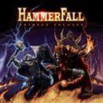

Hammerfall : Crimson Thunder (2002) |
|

http://www.hammerfall.net |
1. Riders of the Storm 4:34 |
7.8/10 |
|
Tras un debut prometedor, un segundo disco fantástico y un decepcionante tercer álbum, no sabíamos que podíamos esperar de este cuarto lanzamiento del grupo alemán Hammerfall, titulado "Crimson Thunder". El resultado ha sido un disco de heavy metal bastante clásico, tampoco esperábamos algo especialmente original, de tempo en general moderado aunque contundente, y mejor que su predecesor. En suma, algo que gustará a los fans más acérrimos de esta banda y que apunta en la dirección correcta para reconciliarles con aquellos que quedaron decepcionados por "Renegade", aunque desde luego tampoco es un "Legacy of Kings". Nada más empezar nos encontramos con la solidez rítmica de "Riders of the Storm", de tempo moderado y el típico sonido de auténtico heavy metal. "Hearts on Fire" es un poco más rápido, con más coros y un estribillo que recuerda al heavy metal más suave de los ochenta. "On the Edge of Honour" saca a relucir por primera vez al doble bombo; Joacim Cans canta aquí en tonos más altos, y el estribillo es más melodioso. La cuarta pista, "Crimson Thunder", es otro tema de sonido clásico, con un estribillo trabajado aunque no espectacular. "Lore of the Arcane" es una cortita instrumental que abre camino a "Trailblazers", un tema rápido, con algún cambio de ritmo interesante, y un estribillo que no está mal. "Dreams Come True" es una balada bastante suave acompañada por guitarras limpias y algún tono de sintetizador. "Angel of Mercy" es otro tema lento y no especialmente destacable. La novena canción, "The Unforgiving Blade", es otra más de las de ritmo lento y sonido clásico, aunque con algún coro marca de la casa, como en el estribillo. "In Memoriam" es una instrumental como Dios manda, que básicamente ofrece sitio en el disco para el lucimiento del guitarrista Stefan Elmgren, y aunqe no es demasiado brillante, tampoco está mal. "Hero's Return" es un tema rápido, con algunos coros bastante interesantes, y un buen trabajo de voz de Joacim Cans. En el digipack aparece como bonus una versión del clásico entre clásicos de Yngwie Malmsteen, "Rising Force", que no está mal a pesar de que la voz de Joacim Cans queda un poco foja para esta canción, y de que Stefan Elmgren no es Yngwie Malmsteen... |
||
Rubén Béjar |
||